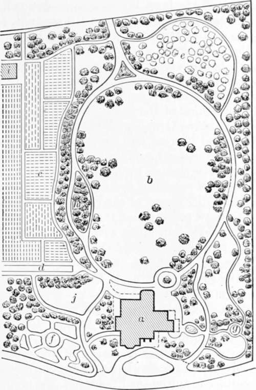
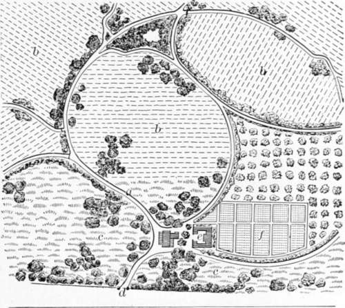

On Wood And Plantations. Part 8
Description
This section is from the book "Landscape Gardening", by Andrew Jackson Downing. Also available from Amazon: Landscape Gardening.
On Wood And Plantations. Part 8
An excellent illustration of this species of residence is afforded the reader in the accompanying plan (Fig. 14) of the grounds of Riverside Villa. This pretty villa at Burlington, New Jersey (to which we shall again refer), was lately built, and the grounds, about six or eight acres in extent, laid out, from the designs of John Notman, Esq., architect, of Philadelphia; and while the latter promise a large amount of beauty and enjoyment, scarcely anything which can be supposed necessary for the convenience or wants of the family, is lost sight of.
The house, a, stands quite near the bank of the river, while one front commands fine water views, and the other looks into the lawn or pleasure grounds, b. On one side of the area is the kitchen garden, c, separated and concealed from the lawn by thick groups of evergreen and deciduous trees. At e, is a picturesque orchard, in which the fruit trees are planted in groups instead of straight lines, for the sake of effect. Directly under the windows of the drawing-room is the flower garden, f; and at g, is a seat. The walk around the lawn is also a carriage road, affording entrance and egress from the rear of the grounds, for garden purposes, as well as from the front of the house. At h, is situated the ice-house; d, hot-beds; j, bleaching green; i, gardener's house, etc. In the rear of the latter are the stables, which are not shown on the plan.
Fig. 14. Plan of a Suburban Villa Residence.
The embellished farm (ferme ornee) is a pretty mode of combining something of the beauty of the landscape garden with the utility of the farm, and we hope to see small country seats of this kind become more general. As regards profit in farming, of course, all modes of arranging or distributing land are inferior to simple square fields; on account of the greater facility of working the land in rectangular plots. But we suppose the owner of the small ornamental farm to be one with whom profit is not the first and only consideration, but who desires to unite with it something to gratify his taste, and to give a higher charm to his rural occupations. In Fig. 15, is shown part of an embellished farm, treated in the picturesque style throughout. The various fields, under grass or tillage, are divided and bounded by winding roads, a, bordered by hedges of buckthorn, cedar, and hawthorn, instead of wooden fences; the roads being wide enough to afford a pleasant drive or walk, so as to allow the owner or visitor to enjoy at the same time an agreeable circuit, and a glance at all the various crops and modes of culture. In the plan before us, the approach from the public road is at b; the dwelling at c; the barns and farm-buildings at d; the kitchen garden at e; and the orchard at f. About the house are distributed some groups of trees, and here the fields, g, are kept in grass, and are either mown or pastured. The fields in crops are designated h, on the plan; and a few picturesque groups of trees are planted, or allowed to remain, in these, to keep up the general character of the place. A low dell, or rocky thicket, is situated at i Exceedingly interesting and agreeable effects may be produced, at little cost, in a picturesque farm of this kind. The hedges may be of a great variety of suitable shrubs, and, in addition to those that we have named, we would introduce others of the sweet brier, the Michigan or prairie rose (admirably adapted for the purpose), the flowering crab, and the like — beautiful and fragrant in their growth and blossoms. These hedges we would cause to grow thick, rather by interlacing the branches, than by constant shearing or trimming, which would give them a less formal, and a more free and natural air. The winding lanes traversing the farm need only be gravelled near the house, in other portions being left in grass, which will need little care, as it will generally be kept short enough by the passing of men and vehicles over it.
Fig. 15. Plan of an Embellished Farm (ferme ornee).
A picturesque or ornamental farm like this would be an agreeable residence for a gentleman retiring into the country on a small farm, desirous of experimenting for himself with all the new modes of culture. The small and irregular fields would, to him, be rather an advantage, and there would be an air of novelty and interest about the whole residence. Such an arrangement as this would also be suitable for a fruit farm near one of our large towns, the fields being occupied by orchards, vines, grass, and grain. The house and all the buildings should be of a simple, though picturesque and accordant character.
The cottage ornee may have more or less ground attached to it. It is the ambition of some to have a great house and little land, and of others (among whom we remember the poet Cowley) to have a little house and a large garden. The latter would seem to be the more natural taste. When the grounds of a cottage are large, they will be treated by the landscape gardener nearly like those of a villa residence; when they are smaller a more quiet and simple character must be aimed at. But even where they consist of only a rood or two, something tasteful and pretty may be arranged.
In making these arrangements, even in the small area of a fourth of an acre, we should study the same principles and endeavor to produce the same harmony of effects, as if we were improving a mansion residence of the first class. The extent of the operations, and the sums lavished, are not by any means necessarily connected with successful and pleasing results. The man of correct taste will, by the aid of very limited means and upon a small surface, be able to afford the mind more true pleasure, than the improver who lavishes thousands without it, creating no other emotion than surprise or pity at the useless expenditure incurred; and the Abbe Delille says nothing more true than that, " Ce noble emploi demand un artiste qui pense, Prodigue de genie, et non pas de depense".
Continue to: